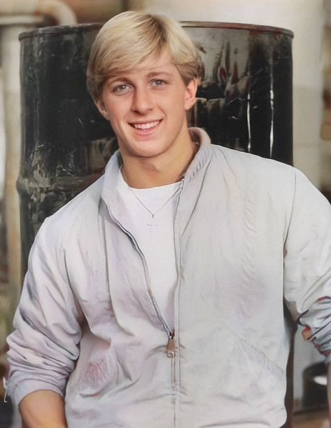

The goal of this project is to use a few different persona's and possible scenariors of potiential real world users to speculate on how they would behave on the MyNextLvl website to identify any design flaws for possible negative user experience to create a better website.
Madeline Miller
Age: 13
From Agusta, GA
Bio: Madeline is a thirteen year old female who has been diagnosed with diabetes. She wants to conduct her own research to learn more about her condition. Since Maddy is under 18 years old she will need her parent's verification to create an account on MyNextLvl. Her and her parent may create an account together to add parental controls to an underage account. She gets irritated when she forgets she has to go see the doctor, so her parents want to give her a way to get reminders on her cell phone.
Madeline's Goals:
- Get help setting up an account from a parent.
- Learn more about her diabetic condition.
- Use the website to set reminders for doctor appointments.
Johnny Lawrence
Age: 19
From Bartow, GA

Bio: Johnny is a 19 year old young man who just graduated high school. He was has been recently diagnosed with Hyperthyroidism. He wants a way to become more independent with his medical condition. He is looking for a way to organize his insurance information, doctor's appointments and medications all together in once place.
Johnny's Goals:
- Johnny wants to create an account with MyNextLvl.
- Johnny wants to save his insurance information on the website.
- Johnny wants to save a list of his medications.
- Johnny wants to set reminders for appointments.
Deanna Colbert
Age: 36
From Summertown, GA
Bio: Deanna has a 5 year old son who has been diagnosed with . She
Madeline's task
- Create an account with a parent
- Read the information provided on the website about diabetes.
- Set up reminders for doctor appointments on a mobile app.
Johnny's Task
Deanna's Task